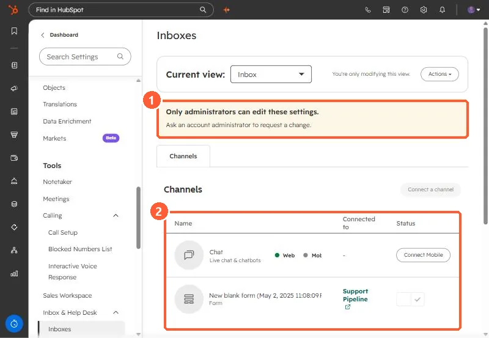
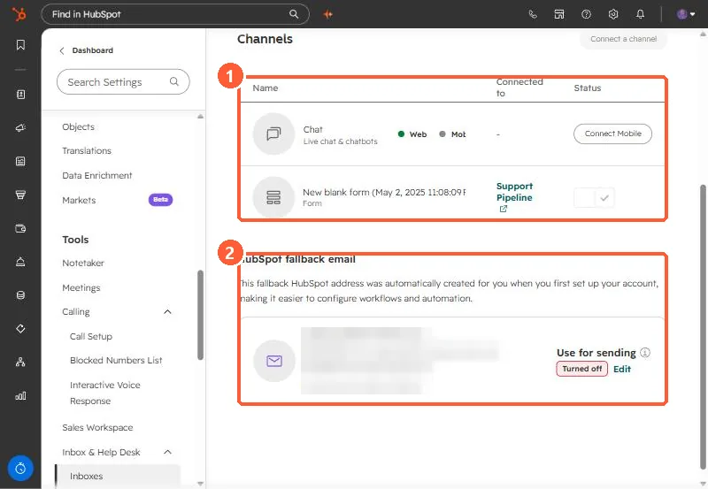

Short answer
In Settings, Inbox & Help Desk, Inboxes, the Channels tab lists every channel feeding an inbox. My demo has Chat (web on, mobile not connected) and a form connected to the Support Pipeline, so submissions create tickets. Below is the HubSpot fallback email, an address HubSpot creates so tools such as ticket automation work before a team email is connected. Using it for sending is off in my demo.
1. Channels
Open Inboxes settings. Only administrators can edit, so my demo shows a banner.


- Chat: live chat and chatbots, on web.
- Form: connected to Support Pipeline, so each submission becomes a ticket.
2. The fallback email


- HubSpot says the fallback email lets you use tools like ticket automation before connecting a team email, and is used if your team email disconnects.
- To send from it, edit it and select the option to use the HubSpot email for sending.
- HubSpot can suspend sending from hosted inboxes for poor sending behavior.
To keep spam out, see the inbox allow and deny list.